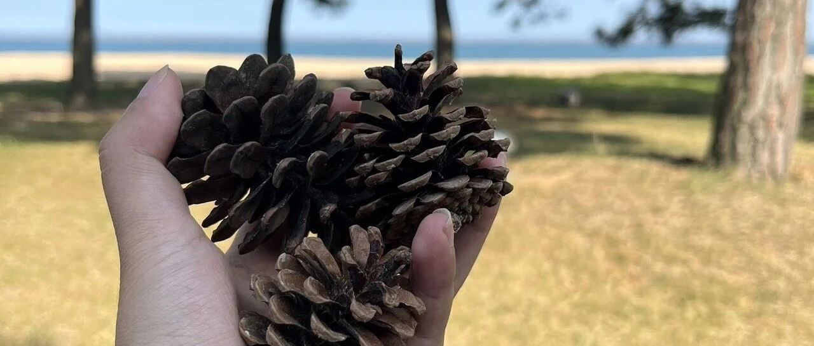

90后存款100万，在我国处于什么水平？
点击关注 秋秋在分享
一起实现财务自由退休
大家好，我是秋秋呀。
今天是答疑第二期。
之前我写过专题《一起存够100万退休》，旨在把我的赚钱心得和行业观察都整理出来。
也有读者反馈，100万够干啥的！
那咱们不靠感觉，用数据说话，百万存款到底处于什么水平？
以及回答如何把100万发挥最大价值。
一、家庭和个人
根据央行2024数据，全国拥有100万存款的城市家庭占比约17.3%。
听起来很多？每五个家庭里，就有一个存款百万！
产生这种错觉是以家庭为统计单位。
这一群体主要力量为50～60岁以上的（占比16.3%），真正90后，根据DT研究院数据，存款百万的很少。
比例只有6.3%。
也就是100个90后，才只有6人达标。

大家要把家庭资产和个人存款区分开。
比如你，原生家庭和父母一起存款100万，不等于你个人就有100万。
有人会说父母的还不都是我的…..我们是要计算人均的。
家庭人均存款100万，资产会有500万以上。
不会拿「100万还不简单，我家房子就够，或者我父母都有」说事了。
二、一线和三线
存款过百万里，一线城市占比为26.3%，同样毕业三年的存款：
一线城市为：10-15万元
二线城市为：5-10万元
三线及以下城市为：3-8万元
差不多一二线🆚三线以下城市，差距两到三倍。
同样100万，你在北京，可以在城区买10-20平米的二手房。
在重庆么，就可以买到50-100平。
在四五线，房价5000元/平以下的城市，你甚至可以住200多平。
大多数说100万够干啥的，肯定是以一二线城市房价来衡量。
否则就算1万一平，100万能买100平的房子，也够干啥的了。
我去小城市玩，本地人讲的是：一套100万的房子，是需要一家三代人的努力。
以小城市5000一个月的薪水，100万差不多要存15年。
也许够用掉一个人的青春了。

三、最大价值
我知道，哪怕我用数据验证，写了很多也改变不了一些人的想法。
对于「以家庭为单位算总存款」，或「只以大城市为衡量标准」的，我理解他们的心情。
一个好的解决思路就是，转化下思维，把100万发挥最大价值，钱不就很多了。
觉得不够？你可以试试「地理套利」这个思维。
地理套利（Geographic Arbitrage）：
一种利用不同地区之间价格、成本、资源或政策差异，来获取利益的策略。
比如你在高收入地区赚钱，在低成本地区消费。
我们就从北京来到威海旅居，原来8000多一个月房租，现在只有1400 。
这个风景就不用我多说了，每天都很惬意。


除了空间套利，还有时间套利和资源套利，最重要的是，盘活你的钱。
在一线城市，个人100万大约能覆盖你10年的支出。
在三四线城市，月均花3000元的标准，可以覆盖30多年。
就是能实现“躺平”的。
那你不敢怎么办？
我们先FIRE的人一直还活跃，无非就是想告诉大家人生有很多种活法。
我们验证了可以，那你也可以。

总之，90后个人存款100万，是属于全国前10%的富裕水平，如果叠加家庭资产，更是处于金字塔尖。
你们觉得个人存款有100万
真不够生活吗？